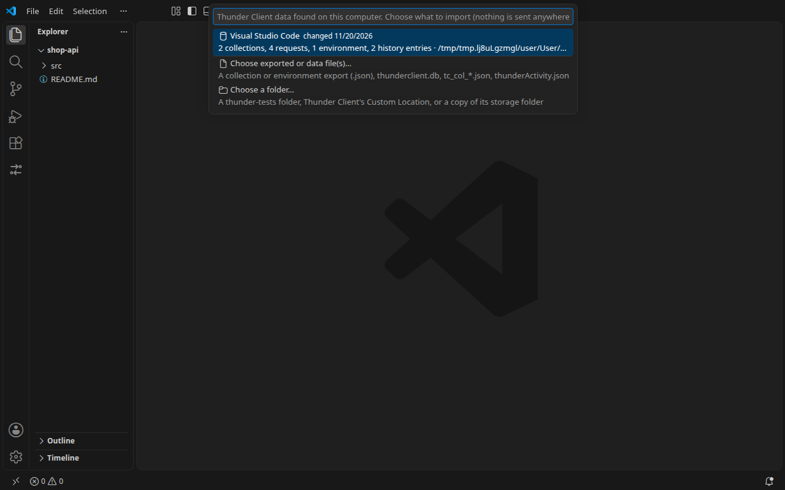

Where does Thunder Client store its data?
Thunder Client keeps your collections, environments and request history as files on your own computer, in a folder named rangav.vscode-thunder-client inside your editor’s globalStorage folder. Those files are yours: you can copy them, back them up, and turn them into plain .http files without exporting anything and without signing in to Thunder Client. This page lists the folders, explains the files, and shows three ways to get the requests out.
Plainwire is an independent open-source project. It is not affiliated with or endorsed by Thunder Client. Facts about Thunder Client on this page come from its documentation (sources), as read on 20 November 2026.
The folder, per operating system
Thunder Client’s documentation (“Storage Location”) gives these locations for VS Code:
| System | Folder |
|---|---|
| Windows | %APPDATA%\Code\User\globalStorage\rangav.vscode-thunder-client |
| macOS | ~/Library/Application Support/Code/User/globalStorage/rangav.vscode-thunder-client |
| Linux | ~/.config/Code/User/globalStorage/rangav.vscode-thunder-client |
| VS Code Server (SSH, WSL) | ~/.vscode-server/data/User/globalStorage/rangav.vscode-thunder-client |
If your project used Thunder Client’s Save to Workspace option, its documentation says the collections are stored in a thunder-tests folder in the workspace instead.
Cursor, Windsurf, VSCodium and other editors
Editors built on VS Code use the same layout under their own folder name: replace Code in the paths above with the name in this table. These are the places Plainwire looks; Thunder Client’s documentation only lists VS Code.
| Editor | Replace Code with | Remote (SSH / WSL) folder |
|---|---|---|
| VS Code | Code | ~/.vscode-server/data |
| VS Code Insiders | Code - Insiders | ~/.vscode-server-insiders/data |
| Cursor | Cursor | ~/.cursor-server/data |
| Windsurf | Windsurf | ~/.windsurf-server/data |
| VSCodium | VSCodium | ~/.vscodium-server/data |
| Code - OSS | Code - OSS | – |
| Trae | Trae | – |
| Kiro | Kiro | – |
| Positron | Positron | – |
For example, Cursor on macOS: ~/Library/Application Support/Cursor/User/globalStorage/rangav.vscode-thunder-client. On a remote host, add /User/globalStorage/rangav.vscode-thunder-client to the folder in the last column. If you use editor profiles, a profile can have its own copy under User/profiles/<id>/globalStorage/rangav.vscode-thunder-client. If you set a custom storage location in Thunder Client’s settings, the data is in that folder.
Get your requests out without exporting or logging in
Plainwire (new in 0.17) reads that folder directly. It does not need Thunder Client to be running or signed in, it only reads the files, and nothing is sent anywhere. The result is a set of .http files under http/<collection>/ plus an http-client.env.json for your environments, which you can open in Plainwire, REST Client or a JetBrains IDE and commit to git.
In VS Code, Cursor or Windsurf: the extension
- Install Plainwire from the latest
.vsixrelease (install steps) and open the folder where the requests should live. - Run Plainwire: Import from Thunder Client… from the Command Palette. It lists every Thunder Client data folder it found, newest first, with what is in it (for example “2 collections, 41 requests, 1 environment, 120 history entries”) and the folder path.
- Pick one. If it has history, choose Collections and environments or Also the history.
- The
.httpfiles appear in the Plainwire sidebar. Send a request or two to check them, then commit.
Plainwire searches the folders in the tables above (including profiles and remote *-server/data folders), the workspace’s thunder-tests folder, and folders named in Thunder Client’s own settings. If your data is somewhere else, for example a copy on a USB stick, use Choose a folder… in the same list, or Choose exported or data file(s)… for single .json or .db files.
Once, a few seconds after startup, if Plainwire finds Thunder Client data with requests and a folder is open, it asks: “Plainwire found Thunder Client data from Cursor: … Import it as .http files in this workspace? No export or login needed; nothing leaves your computer.” with Import and Don’t ask again. The setting plainwire.offerThunderImport (default true) turns that offer off.

From a terminal: the CLI
The Plainwire CLI is one file that needs Node 18 or newer:
curl -fsSLO https://github.com/janwan2003/vscode-api-client/releases/latest/download/plainwire.mjs node plainwire.mjs import --thunder # the most recently changed Thunder data folder node plainwire.mjs import --thunder --history # also the Activity history node plainwire.mjs import ./thunder-tests # any folder of Thunder data node plainwire.mjs import thunderclient.db # single .json or .db files
--thunder searches the editor folders above (not thunder-tests or custom locations; pass those as a folder). It imports the most recently changed one, prints any other folders it found together with the command to import them, and writes to http/ (change it with --out). A run against a Cursor folder on Linux looks like this:
Thunder Client data (Cursor): /home/you/.config/Cursor/User/globalStorage/rangav.vscode-thunder-client 1 collection, 2 requests, 1 environment, 1 history entry Imported 3 requests into 4 files: http/Shop API/Orders.http http/Shop API/http-client.env.json http/Thunder Client history/requests.http http/Thunder Client history/http-client.env.json
In the browser: the online converter
The online converter runs the same code in your browser, with nothing uploaded. Drop a single data file on it, such as thunderclient.db or thunderActivity.json, or a collection export. For a whole data folder the extension or the CLI is the better route, because they read the folder as one and keep requests in their collections.
What each file is
Thunder Client’s team documentation describes collections and environments folders and two database formats: v3 (the default), where “each collection is stored in a single JSON file”, and v4, where “each collection is stored as multiple JSON files”. Older versions used other file names. These are the files Plainwire’s importer recognises:
| File | What it holds |
|---|---|
collections/tc_col_*.json | One collection with its folders and requests (database format v3) |
environments/tc_env_*.json | One environment and its variables |
thunderCollection.json, thunderclient.json, thunderEnvironment.json | Older layout: collections and folders, requests, and environments, each in one file |
thunderCollection.db, thunderclient.db, thunderEnvironment.db | Older NeDB databases: one JSON record per line. A later line for the same record replaces an earlier one, and deleted records are left out |
thunderActivity.json, thunderActivity.db | The history in Thunder Client’s Activity tab (records with "colId": "history") |
| One file per request (database format v4) | Should work: Plainwire recognises the request records and puts them in the collection whose file sits in the same folder or a folder above. We have not tested it on a real v4 folder yet, so tell us if it does not |
backup/, _db-backup/ | Backup copies. Plainwire skips them so requests are not imported twice |
Request bodies saved as an array of lines (as Thunder Client 2.39 does) are joined back into one body. History is imported as one Thunder Client history .http file, newest first, with duplicates (same method, URL and body) removed and at most 500 entries.
How the fields map to .http syntax (auth, bodies, tests, environments) is covered in Thunder Client collections to .http files.
Questions
Do I need to log in to Thunder Client or export my collections first?
No. Plainwire reads the files in the storage folder directly. Exports still work too, if you have them.
Can I recover requests that Thunder Client no longer shows me?
If the files are still in the folder, yes: Plainwire reads whatever is on disk, whether or not Thunder Client opens. To import a backup copy instead of the live data, choose the backup folder itself with Choose a folder… or plainwire import <folder>. Copy the whole folder somewhere safe first if you are unsure; Plainwire does not change it.
Where is the thunder-tests folder?
At the root of the workspace, when Thunder Client’s Save to Workspace or Git Sync was used. Plainwire’s import list includes it when it exists in the open folder.
Does Plainwire send my collections anywhere?
No. It reads local files and writes .http files into your workspace. The extension makes no network calls except the requests you send (privacy policy).
What does not carry over?
Thunder Client’s pre- and post-request scripts are not imported; common tests become # @assert lines. Environment values, tokens included, are written to http-client.env.json, so move secrets to http-client.private.env.json before you commit (how).
Sources
- Thunder Client documentation, “Storage Location”: the per-OS folders.
- Thunder Client documentation, Team:
collectionsandenvironmentsfolders, Save to Workspace andthunder-tests, database formats v3 and v4.
Related: a free Thunder Client alternative without login, and the .http syntax cheat sheet.